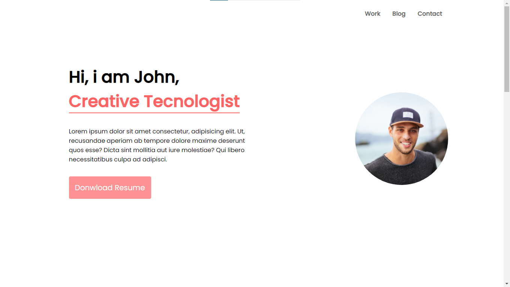
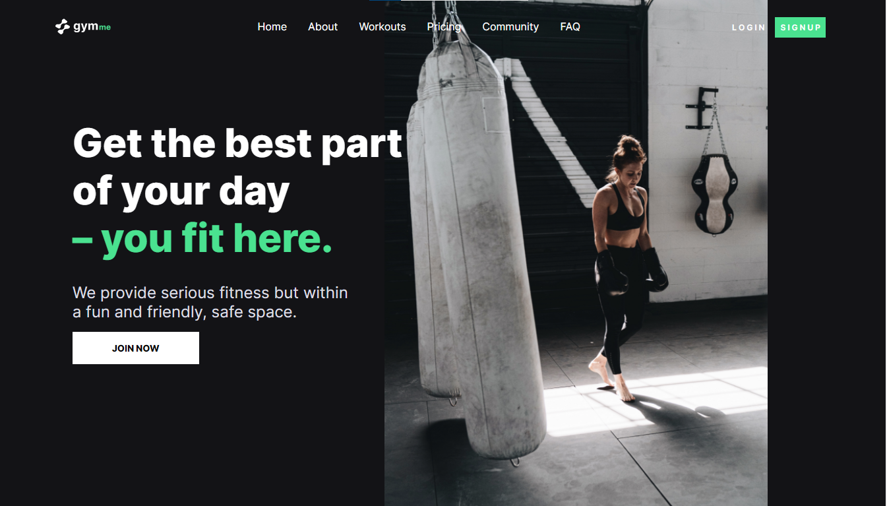
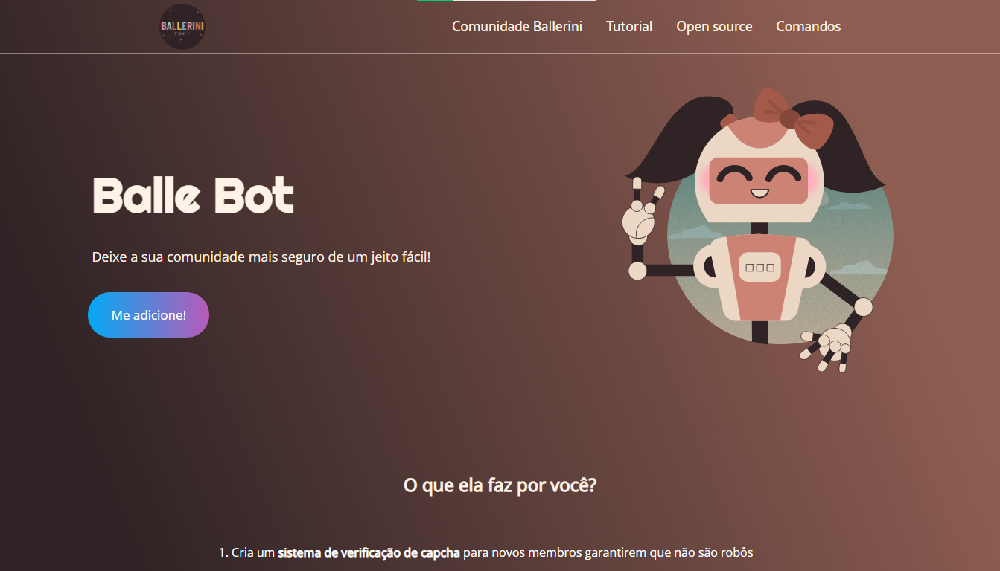
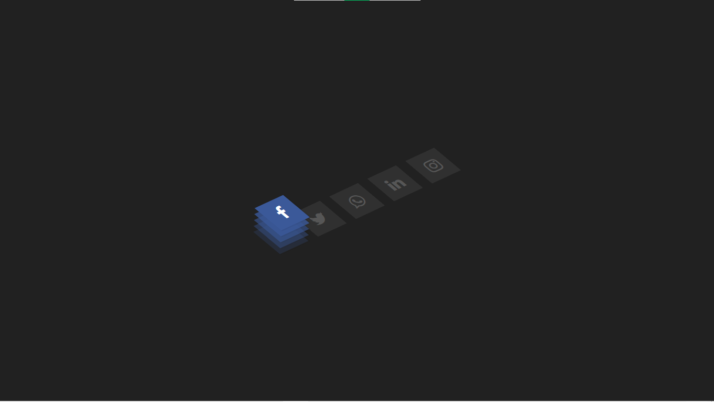

Hello, I'm
Nioritos
A front-end developer student who trying
to specialize in JavaScript
UI/UX Design.
Template Jhon
This is a landing page of portiólio from Jhon, it's free in figma community.
Sculpted in Figma, Retopologized and UVs done
in Maya, Developed with HTML5, CSS3, Developed using flexbox, too.

.
Template GYMme
This is a landing page from GYMme, it's free in figma comunnity, too.
Sculpted in figma, Retopologized and UVs done
in Maya, Developed with HTML5, CSS3, Developed using flexbox, too.

.
Template Ballebot
Goblin concept digital sculpture with
human-like skin. Learned a lot
of quick tips
and look development.
Sculpted in ZBrush, Retopologized and UVs done
in Maya, Textured in
Mari, Rendered using Arnold.

.
Effect Hover 3D icons socials media
Goblin concept digital sculpture with
human-like skin. Learned a lot
of quick tips
and look development.
Sculpted in ZBrush, Retopologized and UVs done
in Maya, Textured in
Mari, Rendered using Arnold.

.